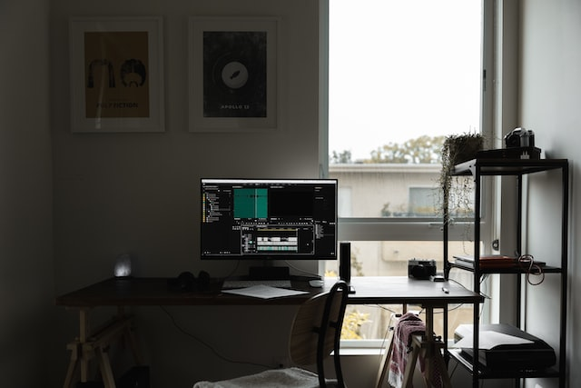
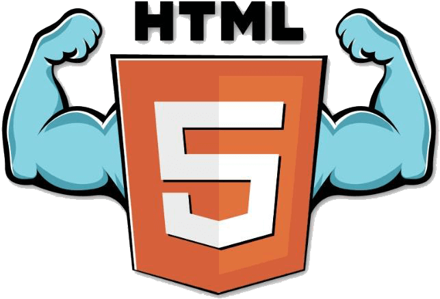
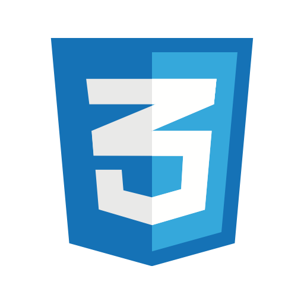

Jayar Samiling
STUDENT DEVELOPER / ASPIRING IT PROFESSIONAL
BS in Information Technology — Nueva Vizcaya State University
Status: Learning, Building & Experimenting | Open to Collaboration
BS in Information Technology — Nueva Vizcaya State University
I’m Jayar Samiling, a student developer based in Bayombong, Nueva Vizcaya, Philippines. I am interested in technology, web development, system development, and interactive digital experiences. I enjoy experimenting with code, designing interfaces, and transforming ideas into functional and engaging applications.
For me, programming is more than writing code. It is about understanding a problem, creating a solution, and making that solution useful and enjoyable for people.
“Good software is not only functional. It should also be intuitive, engaging, and enjoyable to use.”
A web-based concept designed to simplify event registration, participant monitoring, event information, and administrative management.
Tech: HTML, CSS, JavaScript

An academic system concept focused on organizing student information, improving registration processes, and minimizing duplicate or incorrect entries.
Tech: Java, MySQL

A personal portfolio designed to showcase programming skills, projects, interests, and development progress through an interactive interface.
Tech: HTML, CSS, JavaScript

HTML (Advanced)

CSS (Intermediate)
JavaScript (Intermediate)
Java (Intermediate)
Python (Intermediate)
SQL / Database (Intermediate)
Git & GitHub (Intermediate)
Networking (Intermediate)
Projects
Technologies
Year of Learning
Ideas
Email: wilfredsamiling11@gmail.com
GitHub: github.com/TBA
LinkedIn: linkedin.com/in/TBA
Facebook: facebook.com/Jayar Samiling
Location: Bayombong, Nueva Vizcaya, Philippines